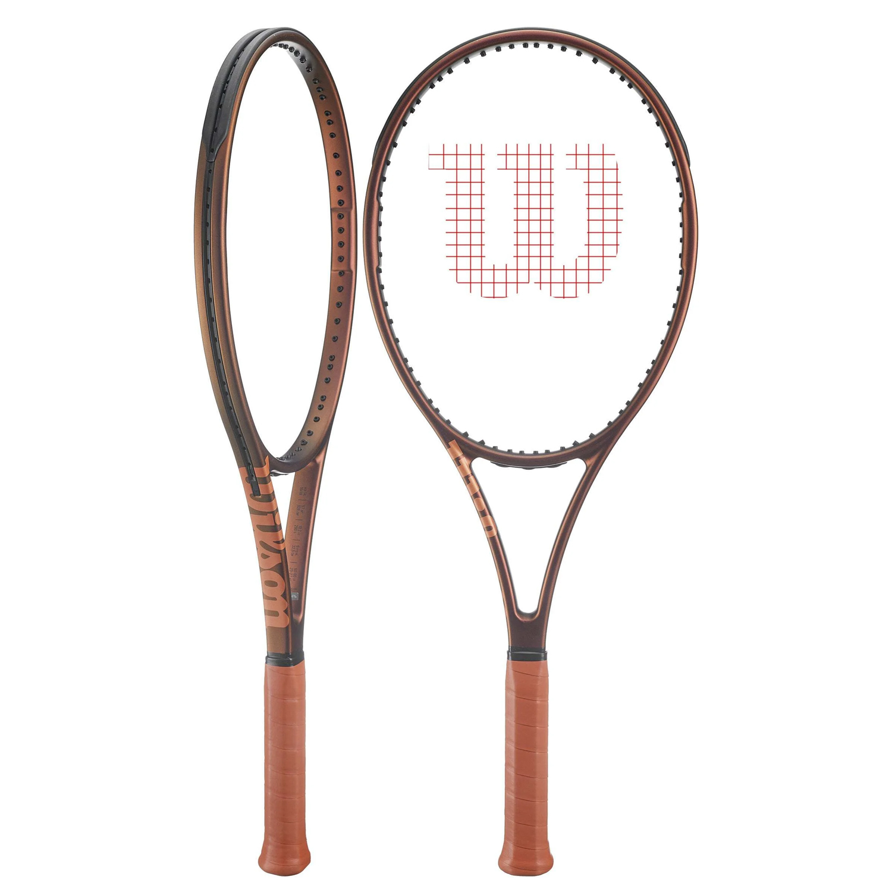
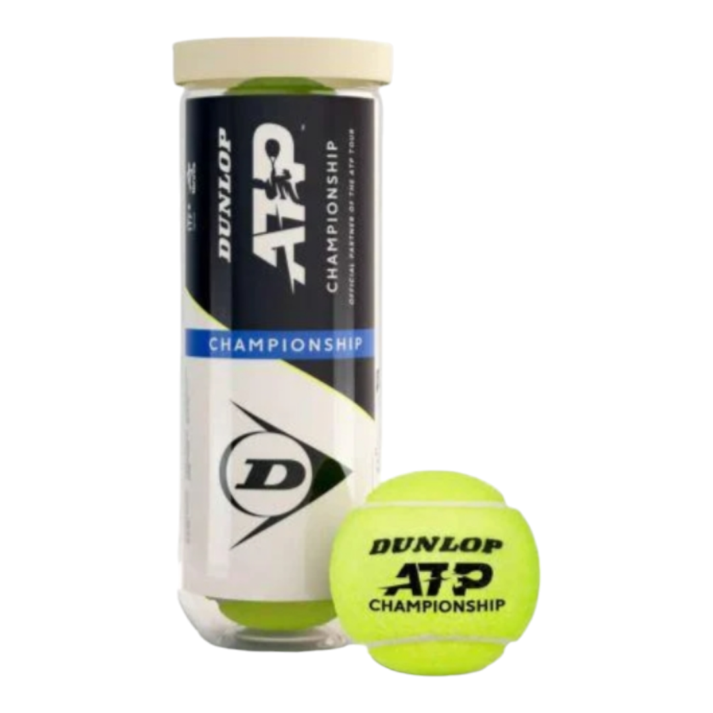
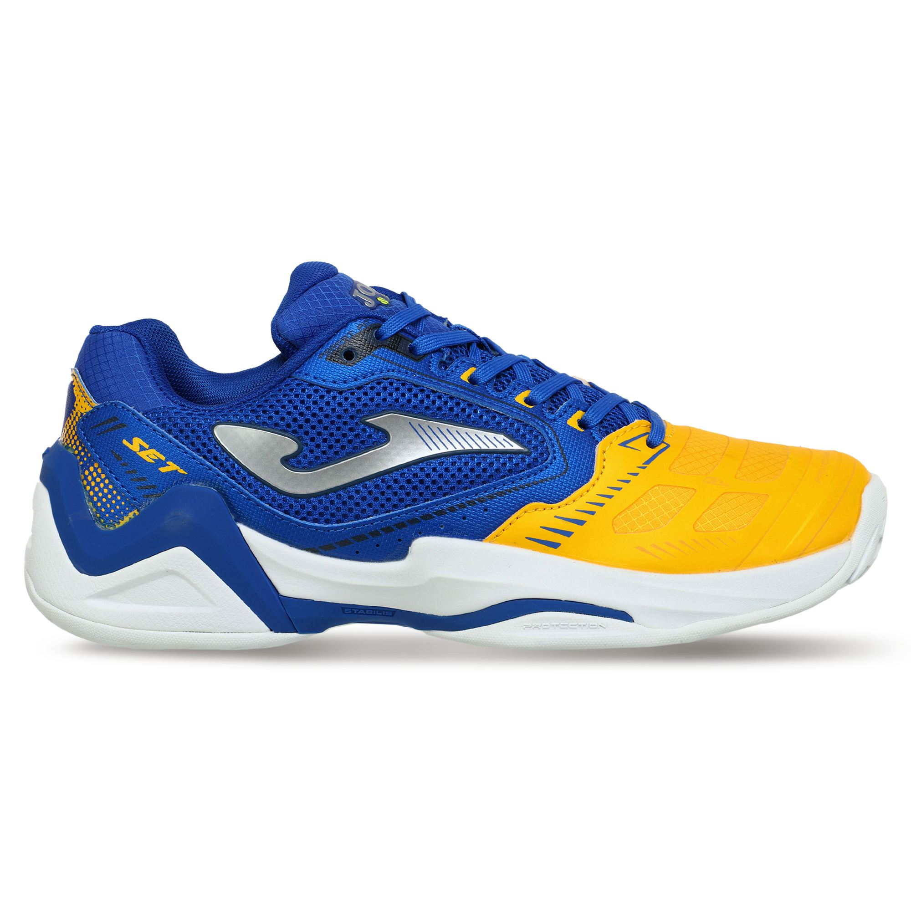

Tennis Equipment Guide
Choosing the correct gear significantly lowers the risk of injury and improves your overall performance.
Rackets
They vary in weight, balance, and head size to match different playing styles.

Balls
Specially pressurized rubber spheres covered with premium felt for consistent bounce.

Footwear
Shoes designed with reinforced lateral support for quick side-to-side movements.
